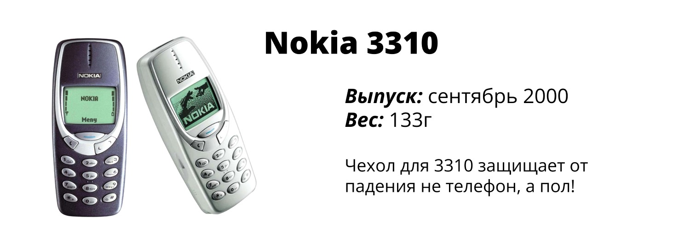

Адрес:
Школьная ул., Калязин
Телефон:
+7(925)219-36-37

Школьная ул., Калязин
+7(925)219-36-37
Год выпуска: 1989
Страна: Япония
Игры: 1046 игр на компактных картриджах
Вес: 220 г
Размеры: 148 × 90 × 32 мм
8-битная портативная игровая система, разработанная и произведённая компанией Nintendo. Первая портативная система семейства Game Boy была впервые выпущена в Японии 21 апреля 1989 года.
Год выпуска: 1989
Страна: Китай
Игры: 8 (в более поздних версиях 132, 576, 999 и 9999)
Вес: 90 г
Размеры: 184 x 76 x 18 мм
«Brick Game» (дословно — «Кирпичная игрá») — портативная игровая консоль со встроенными играми без возможности загрузки новых. Среди встроенных игр всегда находился «Тетрис».
Год выпуска: 1996
Страна: Япония
Игры: 1
Вес: 90 г
Размеры: 55 х 65 х 30 мм
Тамагочи (яп. тамаготти) — игрушка, виртуальный домашний питомец. Идея создания принадлежала компании Bandai — третьему по величине производителю игрушек планеты.
Год выпуска: 1992
Страна: Тайвань
Игры: множество игр на картриджах
Вес: 90 г
Размеры: 55 х 65 х 30 мм
Dendy, или «Де́нди» (произносится как «Дэ́нди») — серия игровых приставок, неофициальный аппаратный клон приставки третьего поколения Famicom японской компании Nintendo.
Год выпуска: 1984
Страна: СССР
Игры: 1
Вес: 90 г
Размеры: 112 х 67 х 14 мм
«Ну, погоди!» («Электроника ИМ-02») — электронная игра, самая известная и популярная из серии первых советских портативных электронных игр с жидкокристаллическим экраном, производимых под торговой маркой «Электроника».
Год выпуска: 2000
Страна: -
Игры: бесконечное количество игр на компакт-дисках
Вес: 20 кг
Размеры: 500 х 600 х 500 мм
В то время, наличие 64 МБ (мегабайт) ОЗУ в формате EDO и жесткого диска емкостью 20 Гбайт было почти роскошью.